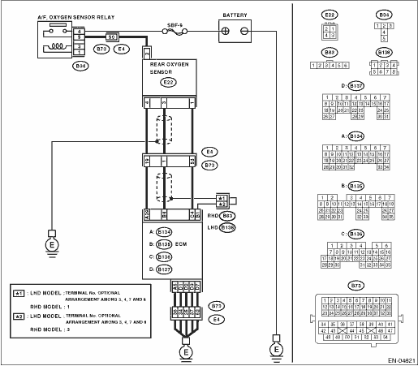

DTC DETECTING CONDITION:
Detected when two consecutive driving cycles with fault occur.
CAUTION:
After repairing or replacing the defective part, perform the Clear Memory Mode  and Inspection Mode .
and Inspection Mode .
WIRING DIAGRAM:


| STEP | CHECK | YES | NO |
|
Is the voltage 8 V or more? |
|
|
|
|
1) Turn the ignition switch to OFF. 2) Repair the battery short circuit of harness between ECM and rear oxygen sensor connector. 3) Turn the ignition switch to ON. 4) Read the data of rear oxygen (A/F) sensor heater current using Subaru Select Monitor. NOTE: For detailed operation procedure, refer to “READ CURRENT DATA FOR ENGINE”. |
Is the current 7 A or more? |
Replace the ECM. |
Finish the diagnosis. |
|
Is there poor contact in ECM connector? |
Repair the poor contact of ECM connector. |
Finish the diagnosis. |